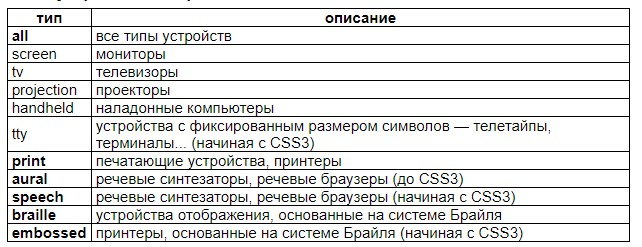
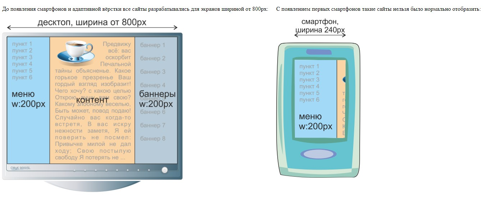
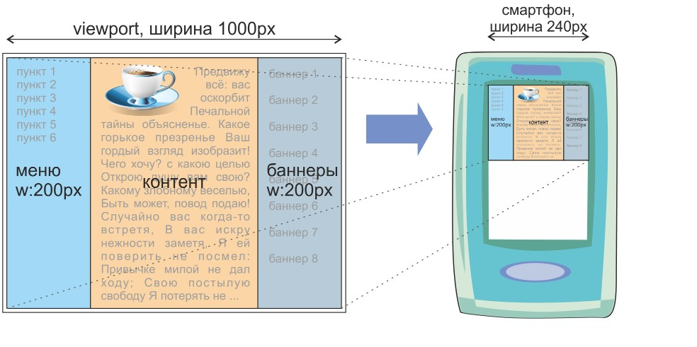

Стилевая директива @media позволяет некоторые стилевые описания применять лишь в том случае, если отображение веб-страницы происходит на конкретном типе (типах) устройств отображения.
Мохаммед Али — американский боксёр-профессионал, выступавший в тяжёлой весовой категории.
Один из самых известных и узнаваемых спортсменов.
После чемпионского боя с Сонни Листоном сменил имя на Кассиус Икс, затем на Мохаммед Али.
Типы устройств отображения
Стилевая директива @media также позволяет использовать медиазапросы:
@media устройство and (медиаусловие) - по-другому называется брейкпоинты
Медиазапросы позволяют некоторые стилевые описания применять лишь в том случае, если устройство отображения имеет некоторые явно указанные характеристики, т.е. соответствует медиаусловию (например, имеет портретную ориентацию, имеет цветной экран, имеет ширину не менее 7 сантиметров, имеет высоту не менее 300 пикселей и т.п.).
Некоторые возможные медиаусловия:
(на некоторых устройствах device-width — всегда короткая сторона экрана устройства, а device-height — всегда длинная, независимо от ориентации экрана;
на некоторых устройствах device-height зависит от того, открыта ли экранная клавиатура)
Если для одного типа устройств требуется исполнение сразу нескольких медиаусловий, медиаусловия следует соединять через and:
@media устройство and (медиаусловие) and (медиаусловие) and (медиаусловие)
например:
@media screen and (min-width: 800px) and (color) { ... }
Если требуется исполнение одного из нескольких медиаусловий, медиаусловия следует соединять через запятую; в каждом медиаусловии следует указывать тип устройства, неуказанный тип устройства приравнивается к all:
@media устройство and (медиаусловие), устройство and (медиаусловие)
например:
@media screen and (min-width: 800px), print and (min-width: 20cm) and (color) { ... }
@media screen and (min-width: 800px), screen and (min-height: 500px) { ... }
Старые браузеры, не поддерживающие медиазапросы, применят указанные в директиве @media стилевые описания, игнорируя медиазапросы. Для избежания такого эффекта, нужно список устройств предварять ключевым словом only:
@media only устройство and (медиаусловие)
Стилевые описания, указанные в такой директиве, будут обработаны только браузерами, которые поддерживают медиазапросы.
Обычно макеты рисуются все в 1920 пикселей.
Один программный пиксель (в css) равен двум пикселям обычным.
Минимальная планка - 320 пиксселей.
Проблема авто-масштабирования на мобильных устройствах
Решение — на смартфоне страница отображается сначала на виртуальном экране (viewport), имеющем типичную для десктопов ширину, а потом уменьшается, чтобы вместиться в экран смартфона:
Указанием в теге head следующего meta-тега:
meta name="viewport" content="width=device-width, initial-scale=1"
мы настраиваем ширину viewport так, чтобы она совпадала с шириной экрана смартфона. Срабатывают медиазапросы для узкой версии сайта:
Указанием в теге head следующего meta-тега:
meta name="viewport" content="width=device-width, height=device-height, target-densitydpi=device-dpi, initial-scale=1"
мы не только настраиваем ширину viewport так, чтобы она совпадала с шириной экрана смартфона, но также и отключаем разницу между CSS-пикселем и аппаратным пикселем (работает не на всех устройствах).
Можно запретить пользователю изменять масштаб отображения:
meta name="viewport" content="width=device-width, height=device-height, initial-scale=1, user-scalable=no, maximum-scale=1.0"
Тег link, как правило, должен быть дочерним для тега head.
Включение в стилевые описания дополнительных стилевых описаний из внешнего файла:
@import "file.css";
Включение в стилевые описания дополнительных стилевых описаний из внешнего файла, предназначенных только для некоторых устройств отображения:
@import "file.css" screen, print;
Стилевая директива @import должна быть первой в стилевых описаниях — до неё не должно быть никаких других стилевых описаний
Стилевые файлы, указанные в тегах link с указанием устройства и/или медиаусловия, или указанные в директивах @import с указанием устройства и/или медиаусловием, будут загружены браузером с сервера в любом случае, даже если отображение идёт на другом устройстве и медиаусловие не выполняется (но, конечно, указанные в таких файлах стилевые описания будут применены только если отображение идёт на указанном устройстве и медиаусловие выполняется).
Изображения в стилевых свойствах background-image, расположенные в таких стилевых файлах или в директивах @media с указанием устройства и/или медиаусловия, будут загружены браузером с сервера только в том случае, если отображение идёт на указанном устройстве и медиаусловие выполняется.